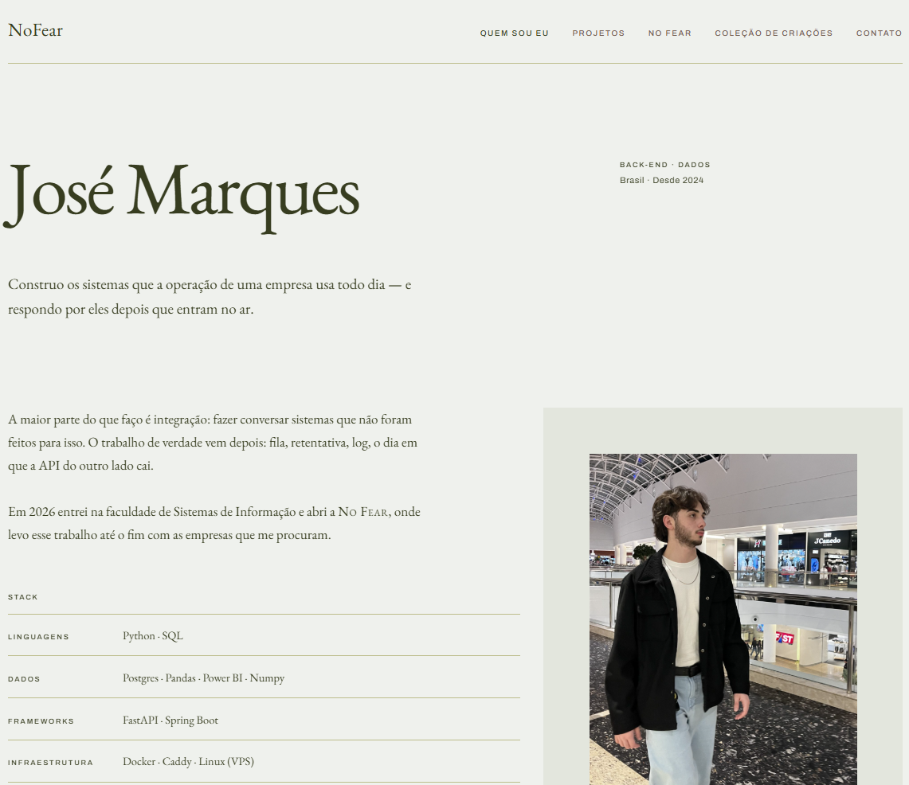
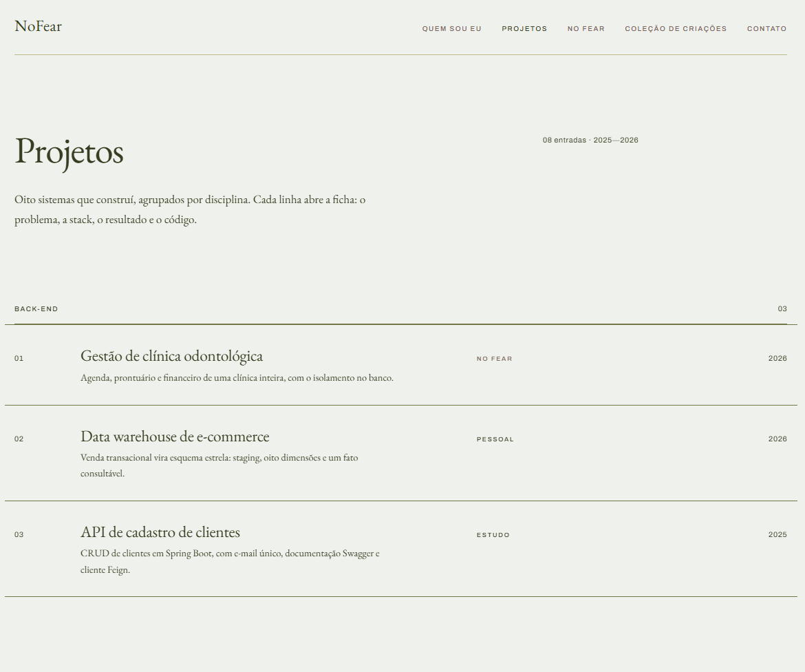
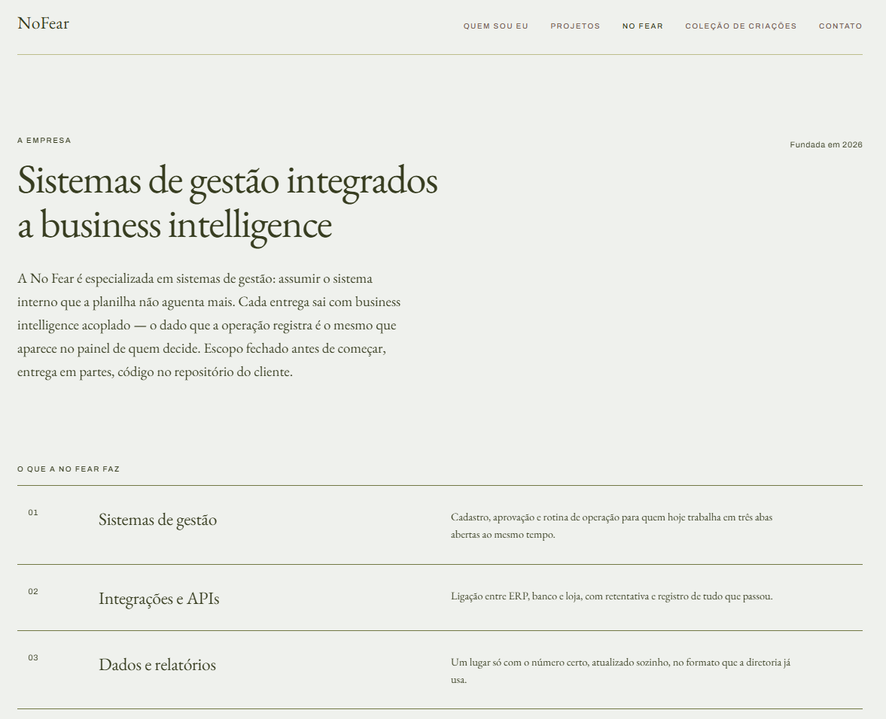

Esse site :)
Front-end · 2026
Sozinho, do sistema visual ao deploy
Pessoal

O problema
Doze páginas com o mesmo cabeçalho, o mesmo rodapé e o mesmo índice — e nenhuma vontade de repetir HTML à mão.
O que construí
Site estático com design system próprio: tokens de cor, tipografia, espaçamento e uma grade de 12 colunas, tudo em CSS puro.
O conteúdo mora num arquivo só. Um gerador em Node lê o conteudo.js e escreve as páginas; trocar um projeto é editar um objeto.
Nada em tempo de execução. Sem framework, sem rastreamento: abrir o index.html no navegador funciona.
Feito com IA. O design system, o gerador e as fichas foram escritos com Claude Code, usando as Skills dele. O que entra, o que sai e o texto final são decisão minha.
Stack
HTML
CSS
JavaScript
Node
Resultado
Doze páginas a partir de um arquivo de conteúdo

